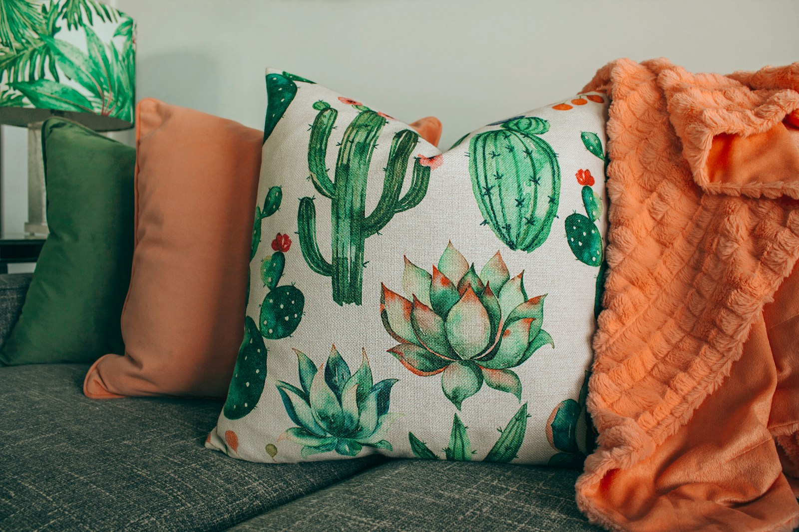

Short answer: The best photos for custom pillows are shot at full resolution, cropped to a square before upload, and framed so faces or pets sit centered with room to breathe. Use daylight from a window, keep the background plain, and avoid heavy filters that crush detail the printer cannot recover. A clean source file at 2000 pixels or more prints sharp on a standard panel, while a small phone crop goes soft. Check the proof preview and fix the file, not the expectation, when something looks off.
Bottom line: Shoot in good light, crop square on your phone, and upload the largest file you have so the panel prints sharp.
Resolution is the first gate
A custom pillow prints only as well as the file you upload, and resolution is the gate most orders fail at. Phone screens hide softness that a printed panel exposes, so check the actual pixel count before you commit. Aim for at least 2000 pixels on the long side for a standard square pillow, and more for a larger cover.
A photo pulled from a social app is often shrunk to save bandwidth, and that smaller file is the one people accidentally send. Download the original from your library instead of the shared version, because the original keeps the detail the printer needs. The difference shows the moment the ink hits the fabric, not later when you cannot fix it.
If the only file you have is small, print a smaller panel rather than stretching it. A clean 1500-pixel image on a 12-inch pillow looks better than the same file blown up to 18 inches where every pixel becomes a visible block. Match the source to the product size, and the result stays crisp instead of vague.
Cropping for a square panel
Most pillow panels are square, and a rectangular photo forces the printer to crop something out. Crop to a square on your phone before upload so you decide what stays, not an auto-tool that may cut off a head or a paw. Center the subject and leave a little space so the print edge does not sit on someone's forehead.
Watch the safe zone. Detail near the very edge of a square can fall into the seam or the panel border, so keep faces and key features inside the central area. A subject that fills the frame edge to edge looks cramped once printed, while a subject with a little margin reads as composed and intentional on the couch.
Our custom pillow size guide explains the exact print area per cover, and checking it before you crop saves a redo. The guide also notes which sizes suit a single face versus a wide group shot, which matters because a family of five simply will not fit a small square the way one pet portrait will, and forcing it ruins the keepsake.
Faces, pets, and centering
For a face or a pet, eye level beats looking down, because a top-down shot flattens features and loses the connection that makes a portrait gift land. Get down to the subject, fill a reasonable part of the frame, and keep both eyes in view when you can. A slightly off-center subject with good light beats a centered one in dim room light.
Pets move, so take a burst and pick the sharp frame where the ears are in and the eyes are open. A blurry hero shot is the most common reject we see, and it is avoidable by shooting in daylight and choosing the one clean capture from ten. The print freezes that moment, so the moment has to be actually in focus first.
Groups need distance, not zoom. Step back so everyone fits with margin, then crop square later, because digital zoom on a phone drops resolution exactly where you need it. A wide, well-lit group shot cropped with care prints far better than a tight zoomed attempt that falls apart the moment the panel is produced and handed over.
Backgrounds that help the print
A plain background keeps attention on the subject and avoids the muddy edges that busy scenes print as gray haze. A wall, a couch, or open sky all work, while a shelf full of objects behind a pet turns into noise once shrunk to a panel. Simple backgrounds are a quiet secret to a gift that looks designed rather than accidental.
If the background is messy, move the subject or change angle rather than planning to edit it out later. Phone erasers leave soft halos that print as obvious rings around the subject, and the printer cannot invent clean detail where none exists. A few steps to a cleaner wall cost less than the disappointment of a haloed keepsake pillow.
Color also matters. A subject in dark clothes against a dark wall loses its edge, and a white dog on a white bed vanishes. Choose contrast so the outline reads, and the panel will feel intentional. The table below maps common photo problems to what actually prints and the fix that solves each one before you upload.
| Photo issue | Print result | Fix |
|---|---|---|
| Low resolution | Soft, blocky panel | Use original, 2000px plus |
| Busy background | Gray haze edges | Move to plain wall |
| Low indoor light | Flat, noisy color | Shoot by window |
| Tight crop | Head or paw cut | Crop square with margin |
Fixing indoor light
Indoor shots fail on light more than on camera, and the fix is usually a window, not a flash. Face the subject toward soft daylight from the side, and the phone sensor captures true color without the yellow cast a ceiling bulb leaves. Close curtains that throw hard stripes across the face, because those print as permanent shadows.
Avoid the built-in flash for portraits. It flattens features and blows out the nearest surface while the rest goes dark, a look no printer can repair. If you must shoot at night, use a lamp to one side and a white board or wall opposite to bounce fill, which evens the light enough for a clean panel without hardware.
Skip heavy filters. A strong contrast or saturation filter crushes the midtones where detail lives, and the printer reproduces exactly that crushed file, not the pretty preview. Shoot flat and let the panel show true color. The keepsake looks better honest than doctored, and the recipient recognizes the moment as it actually was.
Checking the proof before you order
The proof preview is your last chance to catch a soft file or a bad crop, and it is worth a slow look. Zoom the preview to full size on your screen and check the eyes, the edges, and the background for the problems listed above. If it looks weak there, it will look weak on the fabric, because printing reveals rather than hides.
Fix the file, not your hopes. If the preview is soft, find the original or pick a smaller panel; if the crop cuts a paw, recrop and reupload. These are quick changes that save a returned gift and a disappointed recipient. The proof exists so you can act, so treat it as a real checkpoint instead of a formality.
When the subject is a memory that cannot be reshot, a gentle black-and-white treatment can hide minor softness better than forced color, because the eye forgives tone before it forgives blur. Our creative pillow design ideas post covers a few of these rescue moves for old or low-light photos that still deserve a place on the sofa.
Choosing the right product for the photo
Match the image to the cover. A single pet portrait sings on a small square, while a wide landscape belongs on a larger rectangular throw where the scene can breathe. Forcing a panorama onto a square pillow cramms it into a postage-stamp feel, and the memory loses its scale and calm once compressed.
A photo pillow with a single hero image suits faces and pets best, while a custom throw pillow cover with a pattern or a repeated motif suits busy art shots. Knowing which product your file fits prevents the mismatch where a beautiful picture fights the shape of the item and comes out feeling like the wrong gift entirely.
When in doubt, upload two crops and compare the proofs side by side before paying. The few minutes cost less than a redo, and you learn your own taste for what reads on fabric. Over time you will shoot with the panel in mind, and the whole process, from camera to couch, gets faster and the gifts get better with each order.
- Use a single hero image for faces and pets on a square pillow.
- Reserve wide landscapes for a larger rectangular throw cover.
- Pick a pattern repeat cover for busy art rather than one photo.
- Upload two crops and compare proofs before you pay.
- Match the file shape to the product to avoid a cramped print.
Frequently Asked Questions
What resolution photo do I need for a custom pillow?
Aim for at least 2000 pixels on the long side for a standard square panel, and more for a larger cover. Download the original from your photo library rather than a shrunk social share, because the printer needs the full detail. If your only file is small, choose a smaller panel instead of stretching the image and going soft.
How should I crop a photo for a square pillow?
Crop to a square on your phone before upload so you control what stays, not an auto-tool that may cut a head or paw. Keep faces and key features inside the central safe zone with a little margin, because detail near the edge can fall into the seam. Check the product size guide so the crop fits the print area.
Why do my indoor photos look flat on the print?
Ceiling bulbs leave a yellow cast and the built-in flash flattens features, so shoot by a window with soft side light instead. Avoid hard curtain shadows across the face, and skip heavy filters that crush the midtones where detail lives. The printer reproduces the file you send, so flat light in means flat color out.
Can I use a busy background behind my pet?
You can, but a plain background prints cleaner and keeps attention on the subject. Busy shelves turn into gray haze once shrunk to a panel, and phone erasers leave halos the printer cannot fix. Move to a wall or open sky, and pick contrast so a dark pet on a dark wall does not lose its edge.
What if my only photo is old or low light?
Use the largest original you have and crop to a smaller panel so the softness is less obvious. A gentle black-and-white treatment hides minor blur better than forced color, because the eye forgives tone before blur. Compare two crops in the proof preview and pick the one that reads best before you pay.